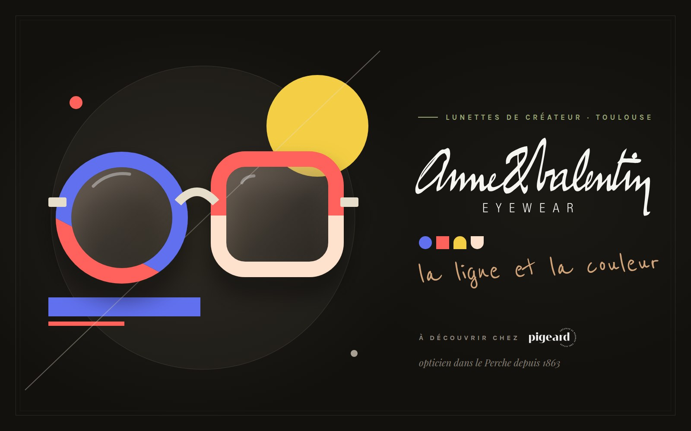
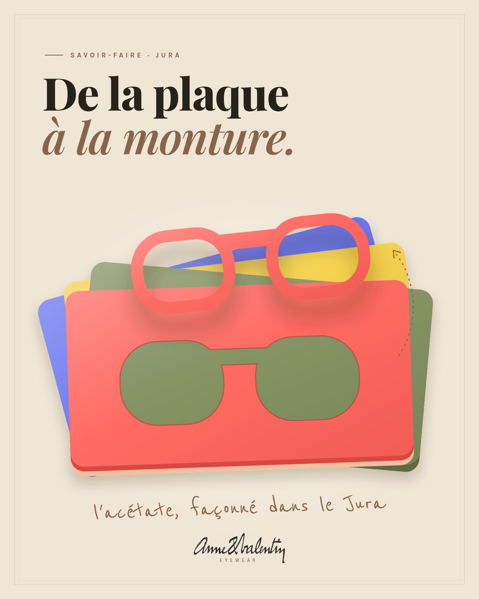
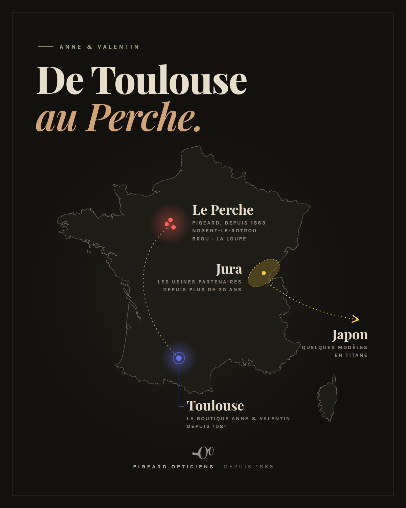

Anne & Valentin
La lunette graphique née à Toulouse
Nouveau chez PigeardEn magasin dès janvier 2027
Anne & Valentin est née du « rêve fou » d'un couple d'opticiens toulousains, à la recherche de lunettes graphiques et singulières pour leurs amis. C'est dans la ville rose que l'aventure a commencé : leur boutique du quartier des Carmes accompagne les Toulousains depuis 1981, et les lunettes de la maison sont désormais vendues dans le monde entier.
Au studio de création, « la ligne, les couleurs » sont au cœur de chaque monture. Les collections se déclinent en concepts aux noms évocateurs — Simplecut, Punchline, Juxtapoz… — qui revendiquent leurs sources d'inspiration : le travail de l'artiste Ryoji Ikeda, le mouvement hard edge de Leon Polk Smith dans le sillage de Mondrian, ou encore une collaboration avec l'artiste française Camille Walala.
Le made in France est pour la maison un engagement continu : Anne & Valentin travaille avec les mêmes usines, dans le Jura, depuis plus de vingt ans, à l'exception de quelques modèles en titane fabriqués au Japon. La marque habille aussi les plus jeunes avec sa ligne Superkids. Sa devise : « Ne pas chercher à se faire remarquer. Chercher à être remarquable. »
L'univers Anne & Valentin


